Copyright © This course contains materials from "Survivability and Information Assurance" (copyright 2005 Carnegie Mellon University) with special permission of the Software Engineering Institute at Carnegie Mellon University.
- Table of Contents
- 1.
- 2. Reading Assignments
- 3. Principle 6: Survivable Functional Units (SFUs) are a helpful way to think about an enterprise's networks.
- 4. Learning Outcomes
- 5. Topics
- 6. Topics
- 7. Functional Units
- 8. Functional Unit Examples
- 9. Functional Unit Blocks
- 10. Identifying Functional Units
- 11. Topic Summary
- 12. Topics
- 13. Survivability
- 14. Topics
- 15. SFU Example-DNS
- 16. Topics
- 17. How Much Survivability
- 18. Topics
- 19. Inter-SFU Issues
- 20. Topics
- 21. Summary
- 22. Exam
1.

This module introduces Principle 6: Survivable Functional Units (SFUs) are a helpful way to think about an enterprise's networks. This is a core idea used in "Sustaining, Improving, and Building Survivable Functional Units (SFUs)".
This module should take 3-4 hours.

2. Reading Assignments
Required readings:
DoD DNS Training - (http://iase.disa.mil/eta/dns-training.html)
"How Domain Name Servers Work" - (http://www.howstuffworks.com/dns.htm) [HowStuffWorks 03b] & [Brain 03]
"How does a computer's uninterruptible power supply (UPS) work?" - (http://computer.howstuffworks.com/question28.htm)[HowStuffWorks 03a]
"Installing and Using a Firewall Program" - (http://www.sei.cmu.edu/library/abstracts/news-at-sei/securitymatters4q02.cfm) [Rogers 02]
Recommended readings:
Guidelines on Firewalls and Firewall Policy - (http://csrc.nist.gov/publications/nistpubs/800-41-Rev1/sp800-41-rev1.pdf)
Securing Network Servers - (http://csrc.nist.gov/publications/nistpubs/800-123/SP800-123.pdf)
Recommended readings:
None
3. Principle 6: Survivable Functional Units (SFUs) are a helpful way to think about an enterprise's networks.
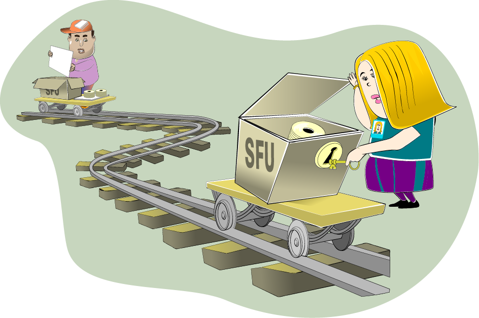
Successful enterprises fulfill their missions for their constituencies. Computer systems and network infrastructure components are playing an increasing role in those successes, to the point where intrusions or even just attacks against them can adversely affect the enterprise's ability to deliver its products and services to its customers. While SAs often needs to focus on the details of those computer systems and network infrastructure components, they must also be able to stand back from that level to see the role that these technologies play in support of the enterprise's missions. In short, they must be careful not to miss the forest for the trees.
It's sometimes difficult for SAs to look at their computer systems and network infrastructure components at a more global level due to the pressures of time and the demands of technology. While short-term, technology-centered achievements are satisfying, they may not support the enterprise's mission. Indeed, they may even be in opposition to that mission. The SA needs a way to balance the demands of technology with the enterprise's need to satisfy critical missions.
This part of "Principles of Survivability and Information Assurance" describes a way to think about an enterprise's networks. It helps SAs more easily see the big picture that shows how their technological charges support the enterprise's missions.
The cornerstone of this thought process is the notion of a Survivable Functional Unit (SFU) which is
a collection of one or more computer systems and network infrastructure components (routers, firewalls, hubs, switches, access points, etc)
that delivers one or more information assets
through one or more services
to one or more constituencies
authenticated to the Survivable Functional Unit in some fashion
and that can survive attacks, outages, errors, etc.
By thinking about the enterprise's network as a collection of SFUs rather than as computers, routers, hubs, switches, firewalls, etc., SAs focus on what these groupings of technology provide in support of the mission of the enterprise. And that's where their focus ought to be-on the mission. An SA's job is to decide how best to support that mission with technology, augmented by practices, policies, and procedures.
The concept of SFUs also helps SAs be more efficient because they have fewer things to think about all the time. By grouping technology into functional areas (SFUs), SAs can often think and work at that functional level. They have fewer items to juggle, helping them to focus on what needs really attention.
4. Learning Outcomes
Define Survivable Functional Unit (SFU)
Describe the benefits of SFUs
Describe the Functional Unit identification process
Describe how to apply survivability engineering using risk management
Describe how to create an SFU dependency diagram
At the conclusion of this segment of "Principles of Survivability and Information Assurance", you will be able to do the following:
Define Survivable Functional Units
Describe why they are beneficial to the SA
Describe how to identify Functional Units in an enterprise
Describe how to make a Functional Unit survivable using Survivability Engineering techniques to create options and then apply Risk Management techniques to select one of those options
Describe how to create a dependency diagram that shows the interconnections between SFUs and their level of interdependency
5. Topics
Functional Units
What is a Functional Unit?
An example
Authentication issues
Functional Unit building blocks
Functional Unit Identification Process
Survivability Review
Building a Functional Unit and Making it Survivable
How Much Survivability?
Inter-SFU Issues
Summary
The purpose of the SIA Curriculum is to teach system administrators how to manage an existing network of cooperating computer systems and network infrastructure components according to the ten principles described in "Principles of Survivability and Information Assurance". Most SAs will find themselves in this type of a situation in their professional career, that is, they will inherit an existing enterprise network and be charged with managing it using these principles.
In this part of the curriculum, we define and explain Functional Units, give an example of a Functional Unit, and then describe how to recognize them in an enterprise. We'll then apply Survivability Engineering to show how example Functional Units can be made more Survivable. Finally, we'll examine how the Survivable Functional Units in our example cooperate with one another to achieve the mission of the enterprise.
6. Topics
Functional Units
What is a Functional Unit?
An example
Authentication issues
Functional Unit building blocks
Functional Unit Identification Process
Survivability Review
Building a Functional Unit and Making it Survivable
How Much Survivability?
Inter-SFU Issues
Summary
7. Functional Units
|
|
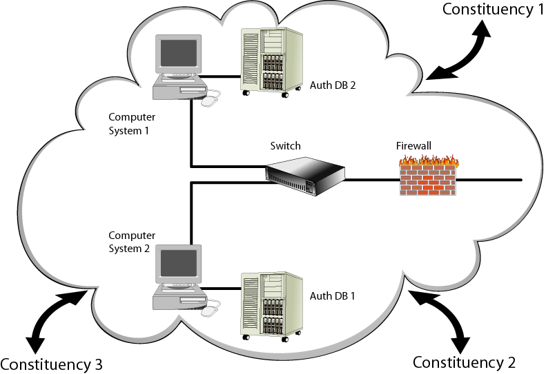 |
A typical enterprise (business, university, or even a home network) has a collection of computer systems and network infrastructure components that are intended to help the enterprise achieve its mission. In most cases, these computer systems are connected by a network infrastructure made up of routers, firewalls, hubs, switches, wires, wireless access points, and network interface cards (NICs). The way that an enterprise's computer systems are interconnected and the selection of network infrastructure components vary from enterprise to enterprise, sometimes widely. Presently, there are few best practices that guide system administrators through the task of architecting and building these networks.
Each infoproc in the enterprise's network has one or more roles that are achieved by providing a service to a constituency. For example, one infoproc could provide time synchronization information to other infoprocs in the enterprise's network.
Consider a randomly selected enterprise's network. It should be possible to group the infoprocs in this network into higher-level, function-oriented entities that we'll call Functional Units. A Functional Unit is a collection of one or more infoprocs that delivers one or more information assets through one or more services to one or more constituencies authenticated to that Functional Unit in some way, and the way in which infoprocs are grouped together into Functional Units is called the Functional Unit Identification Process. As a system administrator, think at the Functional Unit level rather than at the infoproc level as a way to simplify your job and to better understand how technology supports enterprise missions.
Later in this section, we'll describe the Functional Unit Identification Process and in "Sustaining, Improving, and Building Survivable Functional Units (SFUs)" and you will have the opportunity to apply this process to an enterprise network.
8. Functional Unit Examples
Ideally, each infoproc should be a member of only one Functional Unit. Pragmatically, this is often not the case, primarily for economic reasons. There is usually some overlap when an infoproc provides more than one service and therefore is a member of more than one Functional Unit. Routers, firewalls, switches, and hubs are typically members of more than one Functional Unit. For firewalls and routers, this is usually achieved through a rule set that supports different access policies based upon constituency needs. For hubs and switches, more often infoproc traffic patterns define access; the hub and switch technology usually does not impose policy.
This higher level, service oriented functional unit perspective is useful when thinking about infrastructure. Administrators should be able to identify all Functional Units in their organization, the infoprocs that form each Functional Unit, and the way that requests for service are authenticated to the Functional Unit. Similarly, for each infoproc, the administrator should know to which Functional Unit(s) it belongs.
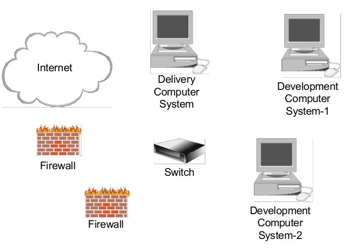
For example, an enterprise that provides Web services to the Internet likely has a Web Development and Delivery Functional Unit. This Functional Unit likely consists of at least the following:
One or more computer systems that provide Web access to the Internet constituency. These are the delivery computer systems.
The networking components that connect these computer systems.
One or more computer systems used to create the content delivered by the delivery computer systems. These are called the development computer systems.
The networking components that connect these computer systems.
The networking components (routers, firewalls, etc.) that separate the delivery computer systems from the development computer systems.
The networking components that separate the delivery computer systems from the constituency (in this case, the Internet).
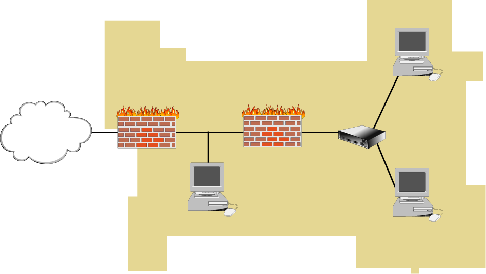
In addition, these pieces may be connected together using the best practices for the Web Development and Delivery Function Unit. These may consist of but are not limited to the following:
The delivery computer systems do not contain the authoritative copy of Web site content. That content resides on the development computer systems.
The development and delivery computer systems are separated by a firewall that defines a strict policy that significantly reduces the traffic that can move between these systems.
The delivery computers are attached to a public network section that may have no other computer systems attached to it. These computer systems are "expendable computers" that are presumed to be frequently attacked and perhaps even compromised. This results in minimal damage due to the tight security and vigilance practiced by the system administrators.
When taken together, these infoprocs make up the Web Development and Delivery Functional Unit that serves the Internet constituency. They provide a collection of information assets to some constituency that is authenticated in some fashion. The system administrator can think about this Functional Unit, how it supports the business missions, its importance relative to other Functional Units, and its dependence on other Functional Units.
Every Functional Unit has some concept of authentication whether explicitly stated or not. In this case, authentication to the Web development and delivery Functional Unit could work as follows:
For the delivery computer systems, one of the following could be used:
- Any valid request originating from any computer system on the Internet could be accepted.
- Any valid request originating from any computer system on the Internet where the mapping IP address to hostname and back to IP address produces the original IP address of the request.
- Any valid request with some login and password could be accepted.
- Any valid request with some ancillary authentication-a certificate-could be accepted.
For the delivery and development computer systems, any valid request that uses strongly authenticated and encrypted communication channels could be accepted to provide administrative access.
Recall that in Principle 5: Identification of users, computer systems, and network infrastructure components is critical, the identification of users and infoprocs is critical. The way in which a constituency authenticates to a Functional Unit builds on the identification schemes described there. For example, some of the authentication could result from the firewall rules that define the set of allowable connections between infoprocs. This could be the result of implementing item "Any valid request originating from any computer system on the Internet where the mapping IP address to hostname and back to IP address produces the original IP address of the request". from the previous list describing delivery computer systems authentications.
The point is that every functional unit has and therefore must clearly define the authentication requirements for gaining access to the information assets provided to constituencies of that service.
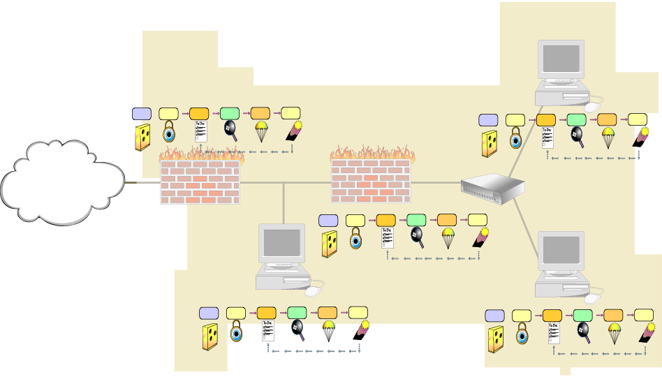
Further, the individual infoprocs that compose the Functional Unit must also be thought of as discrete components subject to the application of best practices. This means that the computer system(s) delivering content to a constituency must reflect the best practices as outlined in Securing Network Servers [Allen 01] and Securing Public Web Servers [Kossakowski 01], for example. The firewalls that separate computer systems from one another should also follow the best practices outlined in Deploying Firewalls [Fithen 99].
Principle 7: Security Knowledge in Practice (SKiP) provides a structured approach describes the SKiP Method that should be applied to those individual infoprocs throughout their pre-production and production life cycle.
9. Functional Unit Blocks
In general, functional units can be broken into two groups. The first group represents the excavation and the stones of the roadbed. Everything else is built on top of them. These must be firm and well-built lest the weight of the rest cause the roadbed to crumble. These functional units may contain but are not limited to the following:
Domain Name Service
Host Configuration
User Authentication
Logging
Network Intrusion Detection
Network File Service
File Backup and Restore
Administrative
The second group of functional units is the concrete of the road. They are built on top of the roadbed (the previous group of functional units). These functional units may contain but are not limited to the following:
Electronic Mail
Web Development and Delivery
Remote Access
Wireless Access
Internet Proxy
Layered on top of these functional units are any other functional units specific to the business, such as a Database Functional Unit.
Functional Units are the building blocks of the enterprise network. They provide a service to a constituency. They consist of computer systems and network infrastructure components called infoprocs. They require some type of authentication to receive service.
10. Identifying Functional Units
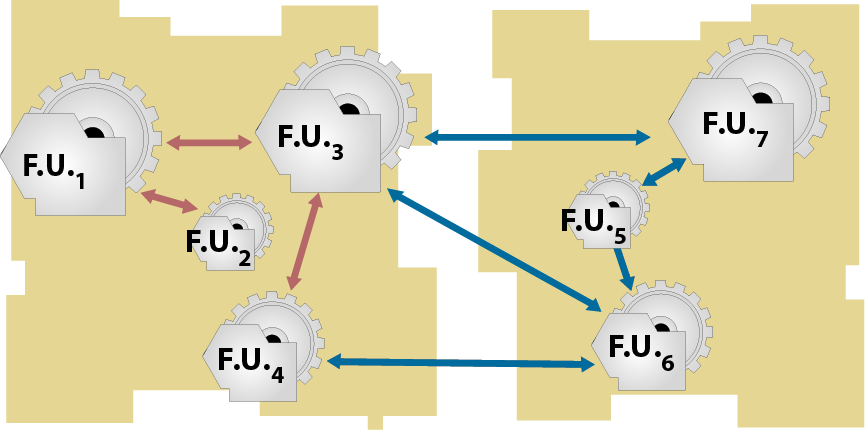
Given this concept of a Functional Unit, how would SAs recognize them in an enterprise? What information would you need to know to determine what Functional Units there are, what services they provide, who are the constituencies to whom these services are being provided, and what type of authentication is being used? Here are some ideas:
A sampling of network traffic that shows which infoprocs talk to other infoprocs
At a minimum this will tell you which infoprocs interact with one another using the network. Through that analysis, one can see who's talking, what they say to each other (protocols and perhaps authentication information), and the results of the attempt (an answer or request denied, which may give more information about who the constituencies truly are). Note that the sampling ought to be long enough to capture even the occasional interactions. For example, some activities may only happen once a month or once a quarter. If sampling only captures one week's worth of data, less frequent activities may not be captured.
Logging information that may only be stored on local media
The network may not contain all of the dialogue. There may be more information, including more details about denied requests, saved in log files on disks on the infoprocs. That information can give more clues about the functional units. There are the same issues regarding the amount of logging information analyzed with respect to occasional activities.
A list of running programs, services available to the network or to an infoproc that perhaps have not been used, etc.
This information gives a more complete picture than the network along. Perhaps there are services that haven't been used during the span of the network capture. Again, this kind of information must be sampled over a longer period of time to capture occasional activities
What the system administrators think
The administrators who manage these infoprocs may have more insight into what they do, although that information could be dated in that it may say what they used to do and not what they presently do. This information should be thoroughly corroborated before being used.
Infoproc inventory
The list of hardware and software that is installed around the enterprise. The list of additional applications that were added to the infoprocs beyond the operating system.
Policies and procedures that are in place
Policies and procedures may define who some of the constituencies are and what the authentication schemes are.
The process by which the Functional Units are identified is called the Functional Unit Identification Process. It's an ad hoc process that seeks answers to the following:
Which collections of one or more computer systems and network infrastructure components (routers, firewalls, hubs, switches, access points, etc)
Deliver which information assets
Through which services
To what constituencies
With what kind of authentication?
These artifacts can provide most if not all of the information needed to determine the make-up of the Functional Units around the enterprise. In "Sustaining, Improving, and Building Survivable Functional Units (SFUs)", you will have the opportunity to combine the networking skills you gain in Information Assurance Networking Fundamentals with these principles to recognize the Functional Units in an enterprise, manage them with SKiP as defined in Principle 7: Security Knowledge in Practice (SKiP) provides a structured approach, and improve them by making them more survivable. That topic, which is also Principle 1: Survivability is an enterprise-wide concern, is described next.
11. Topic Summary
A Functional Unit is
A collection of one or more infoprocs
That delivers one or more information assets
Through one or more services
To one or more constituencies
Authenticated to the Functional Unit in some way
Functional Units can be identified using the Functional Unit Identification Process along with artifacts from the enterprise
A Functional Unit is a set of one or more infoprocs that provide a service to a constituency that is authenticated to that Functional Unit in some way. Those Functional Units can be identified using the Functional Unit Identification Process along with artifacts from the enterprise. In "Sustaining, Improving, and Building Survivable Functional Units (SFUs)", you will have the opportunity to identify Functional Units and improve their survivability.
12. Topics
Functional Units
What is a Functional Unit?
An example
Authentication issues
Functional Unit building blocks
Functional Unit Identification Process
Survivability Review
Building a Functional Unit and Making it Survivable
How Much Survivability?
Inter-SFU Issues
Summary
13. Survivability


Functional Units need to provide service to an authenticated constituency in a survivable manner [CERT a]. Recall from Principle 1: Survivability is an enterprise-wide concern that survivability is "the ability of a network computing system to provide essential services in the presence of attacks, failures, or accidents and recover full services in a timely manner." It is critical to architect services to be survivable because of networks increased dependence upon the Internet and the increasing sophistication of attacks. Functional Units, therefore, must be survivable and survivability must become a design criteria.
Unfortunately, applying survivability in an operational setting is not yet well defined. There are few practices that can be used when architecting and building a Survivable Functional Unit. Nonetheless, we can make some improvements to our Web Delivery and Development Functional Unit to make it more survivable. Those improvements may be but are not limited to the following:
A distributed delivery architecture can be made that uses several computer systems. These computer systems are connected to different networks and each is connected to the Internet through a different Internet service provider (ISP). This redundancy attempts to mitigate the risks of an attack on any one of the computer systems or ISPs.
The Domain Name Service Functional Unit balances the load from the constituency across all of these computer systems through round-robin or some other scheduling approach. This scheme attempts to make the number and placement of the delivery computer systems transparent to the constituency.
The infoprocs are kept up-to-date with respect to patches. Timely patch applications is one of the most significant actions that a system administrator can take to defend against intrusion attempts.
The infoprocs are instrumented for host-based anomaly intrusion detection as described in the next set of lectures on the SKiP Method. This early warning technology helps the system administrator recognize when computer systems are under attack. This is Principle 7: Security Knowledge in Practice (SKiP) provides a structured approach.
The selected authentication scheme is very strong, perhaps using some combination of one-time passwords and biometric identification. This attempts to reduce unauthorized access to a computer system and its services. This is Principle 5: Identification of users, computer systems, and network infrastructure components is critical.
All network-based administrative activity uses strongly authenticated and encrypted connections. This attempts to reduce the unauthorized access and defends against inadvertent disclosure of the administrative session. This is also Principle 5: Identification of users, computer systems, and network infrastructure components is critical.
Physical survivability issues also need to be considered, such as uninterruptible power supplies and heating, ventilation, and air conditioning (HVAC) requirements. These need not be addressed in detail but need to be mentioned.
This Functional Unit architecture increases the likelihood that our example Web servers are able to deliver their content to the Internet constituency in the face of attacks and failures. These include attacks affecting one or more of the infoprocs that separate the Web servers from those seeking service.
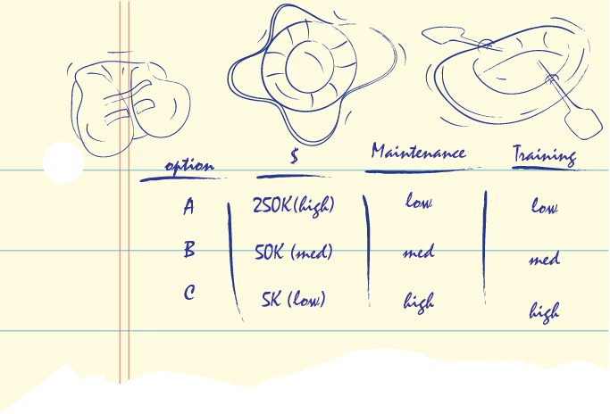
14. Topics
Functional Units
What is a Functional Unit?
An example
Authentication issues
Functional Unit building blocks
Functional Unit Identification Process
Survivability Review
Building a Functional Unit and Making it Survivable
How Much Survivability?
Inter-SFU Issues
Summary
15. SFU Example-DNS
Reading assignment: Before this lecture, you should have read:
A brief description of firewalls [Rogers 02c]. This story draws an analogy between the guard at the front desk and a firewall and serves to describe what a firewall is and does.
Installing and Using a Firewall Program [Rogers 02]. (http://www.sei.cmu.edu/library/abstracts/news-at-sei/securitymatters4q02.cfm)
Let's look at an example of an SFU in more detail. First, let's define who the constituencies are, what the services are, and what authentication schemes are used:
Constituency: The Internet
Services: Hostname-to-IP address and IP address-to-hostname mapping for our domain (e.g., cert.org, microsoft.com). This is the more commonly used DNS service. Hostnames are mapped onto IP addresses, just as with the telephone book, and IP addresses back onto hostnames, just as with the telephone caller ID feature. Authentication: Requests from the standard DNS query port (UDP port 53). The specifics of the port and protocol are not important here. Suffice it to say that the server knows how to listen for requests and a client knows where the server is listening.
Service: Zone transfer to secondary DNS servers located elsewhere on the Internet. Secondary DNS servers work like primary servers. The concept was created to provide redundancy. The idea is: if the primary is unavailable, ask one of the secondary DNS servers. It attempts to solve the same problem that an aviation designer encountered when they put in a second engine on an airplane; if one stops working, the plane can still fly, perhaps slower and not as fast, but fast enough so that the plane can land and protect the passengers. This is another example of survivability. Every DNS zone ought to have at least one other secondary server and likely more.
Here's how this works: an SA makes a deal with some other SAs around the Internet to provide secondary DNS services. It often is a "you scratch my back and I'll scratch yours" relationship in that they are secondary servers for each other. They use zone transfers as the way to move the data from the primary DNS server to a secondary. The point is that the names and addresses of the secondary DNS servers are well known to those servers providing primary DNS services.
It is a risk to let just anyone connected to the Internet see the names and addresses of all of the hosts on your network. It can provide them with more information that they can use to attack you. The idea is to provide such information only to secondary servers and insure that they don't share it everyone through zone transfers.
- Authentication: Requests from the standard DNS zone transfer port (TCP port 53).
The set of secondary DNS hosts is clearly defined.
Constituency: The Enterprise
* Services: Hostname-to-IP address and IP address-to-hostname mapping for our domain.
Same as the description for the Internet.
- Authentication: Requests from the standard DNS query port.
* Service: Zone transfer to secondary DNS servers located in the enterprise. Again, see the description for the Internet.
- Authentication: Requests from the standard DNS zone transfer port. The set of secondary DNS hosts is clearly defined.
This is the mission of the SFU, its reason for being. Now that we know what it's supposed to be doing, let's look at how those goals are achieved.
The same philosophy used to define the characteristics of secondary DNS SFUs scattered about the Internet can also be applied to the makeup of architecture of each individual SFU. In short, this means redundancy. Redundancy can be achieved by having more than one ISP, more than one external firewall, and more than one EDNS server. (Principle 1: Survivability is an enterprise-wide concern)
The same issues of power and long haul Internet connectivity carrier also need to be addressed. Just as a domain can be serviced by redundant DNS SFUs, each SFU can in turn have redundant components and connectivity that improves its survivability. Again, this redundancy comes with a cost. Remember that at this point, we're looking for options, the measure of their cost in dollars and the effort necessary to install and maintain the SFU.
Part of the cost no matter the level of redundancy is a reliable and robust power supply. There are devices called uninterruptible power supplies (UPSs) [HowStuffWorks 03] that need to be used to provide this type of power for all electronic devices, including all infoproc devices and any connections to ISPs. A UPS is another option that improves the survivability of the DNS functional unit and its cost needs to be defined for later evaluation.
With respect to redundant servers in the DNS SFU, DNS is also designed to provide a capability known as load balancing. This means that the DNS request load is automatically and transparently spread across multiple servers. Two of the popular schemes are round-robin (each request is handed to the next server without regard to any of its performance characteristics) and load balancing (server throughput determines which server gets a request) and each can dynamically shift the load as appropriate. This means that more than one DNS server in the SFU can appear to act as one big server even though more than one computer system actually does the work. This also provides the ability to add more processing capability by adding more DNS servers to the SFU as the demand increases. (Principle 1: Survivability is an enterprise-wide concern)
The result of this option evaluation and enumeration is that the DNS SFU has been made more survivable, at least with respect to the external DNS service. Let's now consider changes to the internal service.
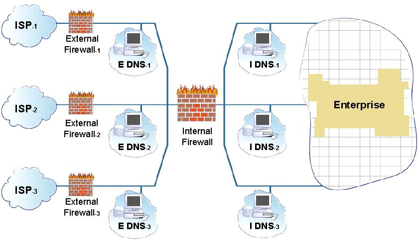
More than one IDNS can also be added to the enterprise through redundancy. The picture in the slide shows one topology that achieves this goal.
In addition, each IDNS can be on a different network, perhaps using a different firewall and any other infoprocs so as to be completely redundant. Power issues also need to be addressed.
Through these changes, the DNS SFU has been made more survivable through redundancy, multiple paths to the servers, and no single points of failure.
Again, each of these options has a cost - in this example, the cost of additional computer systems, power supplies, firewalls, and ancillary networking equipment.
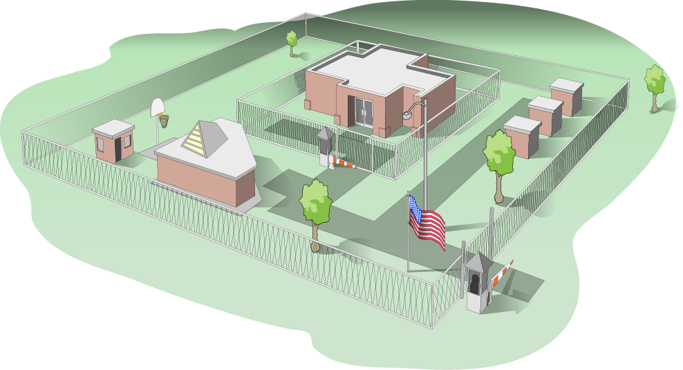
Physical security can also impact an SFU. For our DNS SFU, this may mean that the individual computer systems that make up the SFU need to be located in different places, perhaps different rooms in the same building, perhaps even different buildings if possible.
Imagine a scenario where the DNS SFU as diagramed earlier has all of its constituent infoprocs located in a room in a building that happens to be in a basement level of that building. If extraordinary weather floods that basement, all of the effort to make the Functional Unit survivable may be wasted.
Had the infoprocs been located in different buildings or on different floors in the same building, then the weather that caused the flood might not have had such dire consequences. The point here is to consider physical security issues as well when evaluating the survivability of a functional unit. In this case, weather was the culprit, but it could just as easily have been the water supply that is an integral part of the room air conditioning units that cool the infoprocs.
Another way to reduce the survivability could be the same locks or combinations used to gain access to the rooms where the infoprocs are located. An intruder could disable each infoproc in the SFU no matter their location since the access requirements are the same.
Physical security issues are a concern to the survivability of a Functional Unit. However, we have learned over time how to address these issues through contingency planning and disaster recovery. These lessons strengthen every SFU to which they are applied.
Note that physical security also has a cost that needs to be quantified.
16. Topics
Functional Units
What is a Functional Unit?
An example
Authentication issues
Functional Unit building blocks
Functional Unit Identification Process
Survivability Review
Building a Functional Unit and Making it Survivable
How Much Survivability?
Inter-SFU Issues
Summary
17. How Much Survivability
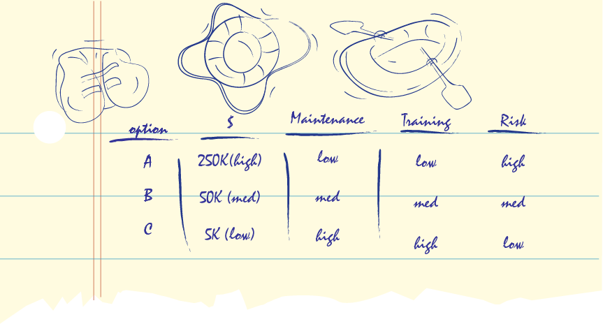
We've created a set of options and some measure of their total cost of ownership. It is decision time: which combinations of these options do we pick to make our Functional Unit a Survivable Functional Unit?
Recall that in Principle 3: Not all data is of equal value - risk must be managed, you learned about how to combine this information with the importance of the asset - here the DNS information - to the mission to help select alternatives that are appropriate to the likely threats and ultimately any financial constraints. The SA has the responsibility of assessing the likelihood of the threat which is an integral part of the selection of the available options.
Selecting from the available options is something that the SA does in partnership with their immediate managers. Others in the enterprise may also need to be included in the decision making process. In Principle 10: Communication skill is critical to reach all constituencies, you'll learn about communicating with other people in your enterprise and how to be more successful by communicating what they need to hear from you and what communication style to use.
At the completion of this task, the SA has designed a DNS SFU that is matched to the needs and constraints of the enterprise and is sufficiently robust and reliable given the likelihood of an attack by a would-be intruder. This is Principle 1: Survivability is an enterprise-wide concern. The SFU is almost ready to be put into production. Before that, however, it is important to understand its relationship with other SFUs in the enterprise.
18. Topics
Functional Units
What is a Functional Unit?
An example
Authentication issues
Functional Unit building blocks
Functional Unit Identification Process
Survivability Review
Building a Functional Unit and Making it Survivable
How Much Survivability?
Inter-SFU Issues
Summary
19. Inter-SFU Issues
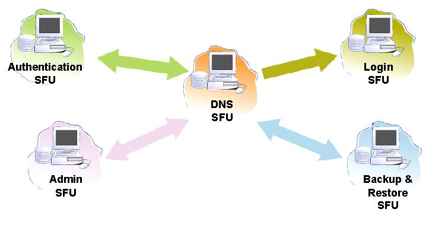
Logging - The DNS SFU should log in a manner that is consistent with the policies and practices of the enterprise. This means that the firewall infoprocs need to allow connections between the DNS SFU infoprocs and the logging SFU infoprocs.
Backup and restore - The DNS SFU creates and modifies files and therefore needs to back up those changes and may need to restore other versions. This means that the firewall infoprocs need to allow connections between the DNS SFU infoprocs and the backup and restore SFU infoprocs.
Authentication - The DNS SFU may need to allow administrative access to system administrators in the enterprise. To authenticate that access, the infoprocs in the DNS SFU would need to interact with the authentication SFU. This means that the firewall infoprocs need to allow connections between the DNS SFU infoprocs and the authentication SFU infoprocs.
Administration - The DNS SFU may need to allow the administration SFU access for remote maintenance. This means that the firewall infoprocs need to allow connections between the DNS SFU infoprocs and the administration SFU infoprocs.
The following slide shows these potential additional connection paths between SFUs.
The DNS SFU uses the logging, backup and restore, authentication, and administration SFUs. What happens if these SFUs are unavailable for some reason? From this type of examination, we can build a dependency diagram that shows which SFUs are more important than others around the enterprise.
One method to use in creating this dependency diagram is to imagine that the dependent SFU is unavailable for some reason and then assess that impact on the SFU under investigation.
* If the logging SFU is unavailable, what happens?
- There is no logging information for later review.
- The DNS SFU, depending upon the logging software installed, can continue to function even if the logging SFU is unavailable.
- Therefore, the DNS SFU does not depend on the logging SFU and can continue to operate.
* If the backup and restore SFU is unavailable, what happens?
- No files can be backed up and previously backed up files cannot be restored.
- The DNS SFU can continue to function even if the backup and restore SFU is unavailable.
- Therefore, the DNS SFU does not depend on the backup and restore SFU and can continue to operate.
* If the authentication SFU is unavailable, what happens?
- Any accounts that rely on the authentication information managed by the authentication SFU are unavailable.
- If all accounts are managed by the authentication SFU, they no users can login to the DNS SFU.
- Therefore, the DNS SFU may depend on the authentication SFU for account login but it may continue to operate even if the authentication SFU is unavailable.
* If the administration SFU is unavailable, what happens?
- Gaining administrative access to the DNS SFU is not possible.
- The DNS SFU can continue to operate as long as administrative access is not needed.
- Therefore, the DNS SFU does not depend on the administration SFU and can continue to operate.
From this, two types of dependencies were defined: "does not depend" and "may depend". There's probably at least one more: "does depend". The slide shows the results of this analysis.
Now, as the inter-SFU connections are diagrammed from the perspective of each SFU in the enterprise, what results is not only the connections but a dependency diagram at the enterprise level. From this, the SAs and their managers can more easily assess the impact of an attack or intrusion on the enterprise.
For example, if an intruder broke into the logging SFU and was able to disable it, the DNS SFU could continue to provide its information assets to its constituencies through its services. It may be possible to take the logging SFU out of service and repair it without disrupting other SFUs.
In contrast, if the authentication SFU were disabled, the DNS SFU might be able to continue to operate as long as administrative access as authenticated by the authentication SFU was not needed. However, that condition cannot continue indefinitely, so the SA likely needs to escalate the enterprise's response to an intrusion to the authentication SFU because of its relative importance to the enterprise.
This weighted dependency diagram shows the interconnections and the level of dependency is a valuable resource to the SA. It shows which SFUs interact with other SFUs and importance of those interactions.
20. Topics
Functional Units
What is a Functional Unit?
An example
Authentication issues
Functional Unit building blocks
Functional Unit Identification Process
Survivability Review
Building a Functional Unit and Making it Survivable
How Much Survivability?
Inter-SFU Issues
Summary
21. Summary
A Survivable Function Unit (SFU) is:
* A collection of one or more computer systems and network infrastructure components (routers, firewalls, hubs, switches, access points, etc.)
* That delivers one or more information assets
* Through one or more information assets
* Through one or more services
* To one or more constituencies
* Authenticated to the Survivable Functional Unit in some fashion
* And that can survive attacks, outages, errors, etc.
Survivability engineering defines options.
Risk methods select the degree of survivability given the options.
SFUs depend on other SFUs for services.
Functional Units let system administrators concentrate on the services they provide to the enterprise without getting prematurely weighed down by the internals of each unit. By identifying the services, the constituencies served, and the authentication methods used, the enterprise's network can be thought of as a collection of Functional Units that interoperate rather than a collection of computer systems and network infrastructure components. With fewer things to think about, system administrators can concentrate on the mission of the enterprise and how the constituent Function Units support that mission.
Functional Units depend upon other Functional Units. This hierarchy helps to prioritize responses to intruder activities as well as understand how the enterprise network components interact.
By layering the concept of survivability on top of this notion of Functional Units, system administrators can provide more reliable and more predictable services to the enterprise. The amount of survivability depends on the importance of the information assets to the mission of the enterprise and the likelihood of outages. There can be too little or too much technology applied to a Functional Unit in the process of making it survivable. Risk methods should be used to match the level of survivability with the importance of the asset to the enterprise. (Principle 1: Survivability is an enterprise-wide concern)
SFUs use the services of other SFUs and they depend on them to varying degrees. By diagramming the interconnections and weighing the importance of those connections, SAs gain more insight into attack and intrusion response activities.
SFUs help the enterprise achieve its mission; that was the motivation for purchasing them in the first place. The challenge is to keep one eye on the mission and the other on the technology used to achieve that mission.
22. Exam
Principle 6: Survivable Functional Units (SFUs) are a helpful way to think about an enterprise's networks.